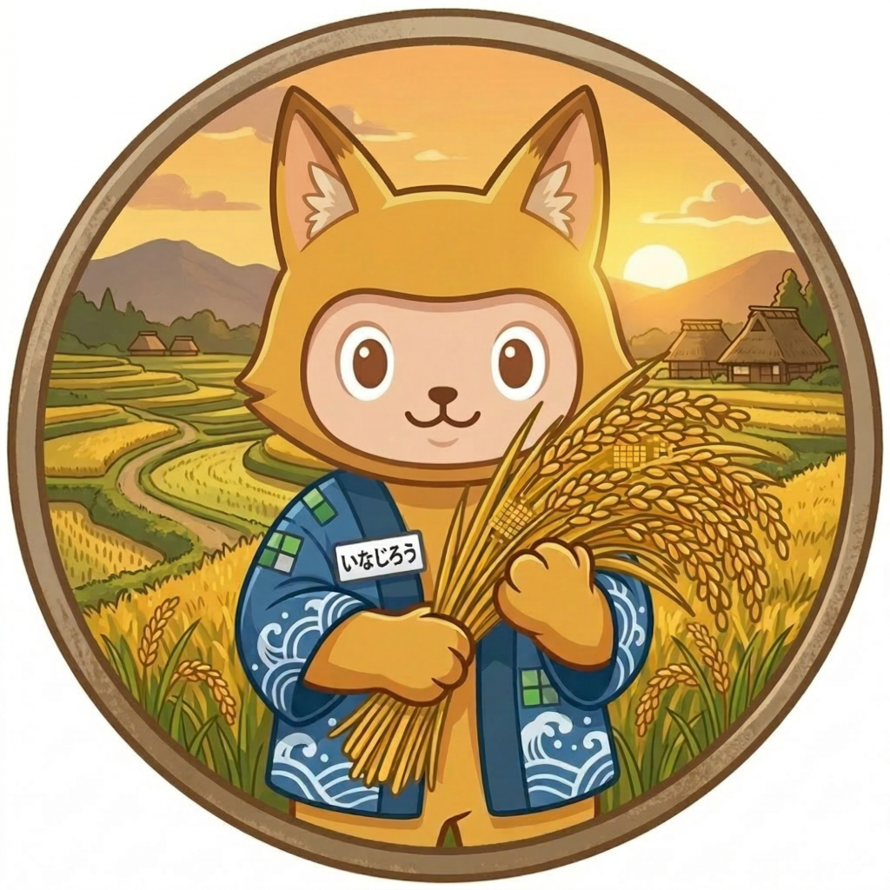

今止まっている業務を見る
繰り返し発生していて、毎回人が迷っている作業を確認します。
Small business AI operations
AIツールを入れるだけでは、現場の仕事は変わりません。まず今の業務を一緒に整理し、AIに任せるところ、人が確認するところを分けます。中小企業の繰り返し業務を、1業務から小さく使える形にします。
売り込みより先に、止まっている業務を一緒に整理します。
When to talk
ツールの問題ではなく、業務の切り方で止まっていることがあります。まず「どの作業を、どこまで任せるか」を見ます。
「何からAI化すべきか分からない」状態から、1つの業務に絞るところを一緒にやります。
First 30 minutes
最初から大きな開発や導入を決めません。止まっている1業務を見ながら、AIで軽くできる部分と、人が確認すべき部分を切り分けます。
普段使っている資料、問い合わせ文、手順メモ、担当者の困りごと。きれいに整理されていなくても大丈夫です。
繰り返し発生していて、毎回人が迷っている作業を確認します。
文章の下書き、分類、整理、チェックなど、まず試しやすい範囲を探します。
判断や責任が必要なところは、人が見られる運用にします。
ミニ相談で終えるか、診断に進むか、1業務の実行支援に進むかを整理します。
Fit / Not fit
無理に大きく見せません。最初から全社導入を狙うより、1業務で型を作る方が合っている支援です。
Partner
業務を分解し、AIに任せる範囲と人が確認する範囲を切り分けるところから入ります。

Webアプリケーション開発の実務経験をもとに、AIを使った情報整理・手順化・半自動化を検証しながら、中小企業向けに「1業務を題材にした安全なAI活用」を支援しています。
ツールを入れる前に、今の業務の流れ、詰まり、確認が必要な場所を見ます。作って終わりではなく、現場で使える形に落とすことを重視しています。
個人向け相談では MENTA で70名以上をサポートし、全体上位5%のブロンズバッジを獲得しています。B2B実績としてではなく、相談支援・課題整理の経験として記載しています。
問い合わせ対応、議事録、資料更新、社内手順。30分で、AIに任せる部分と人が確認すべき部分を切り分けます。
相談フォームURLが確定するまでは、主CTAは仮のメール導線です。Xはプロフィール確認用の補助導線です。